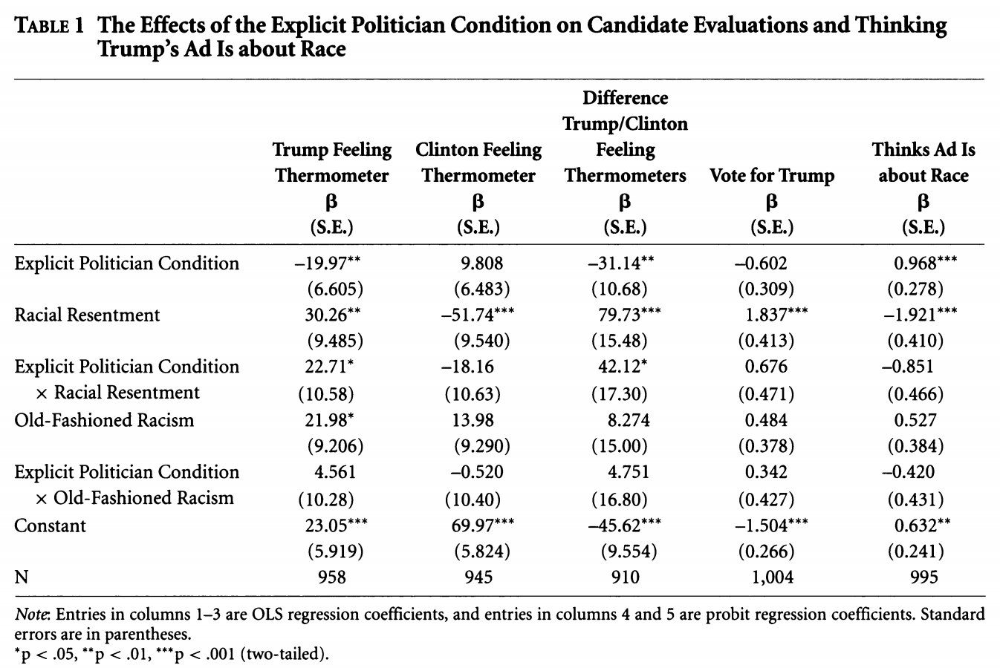
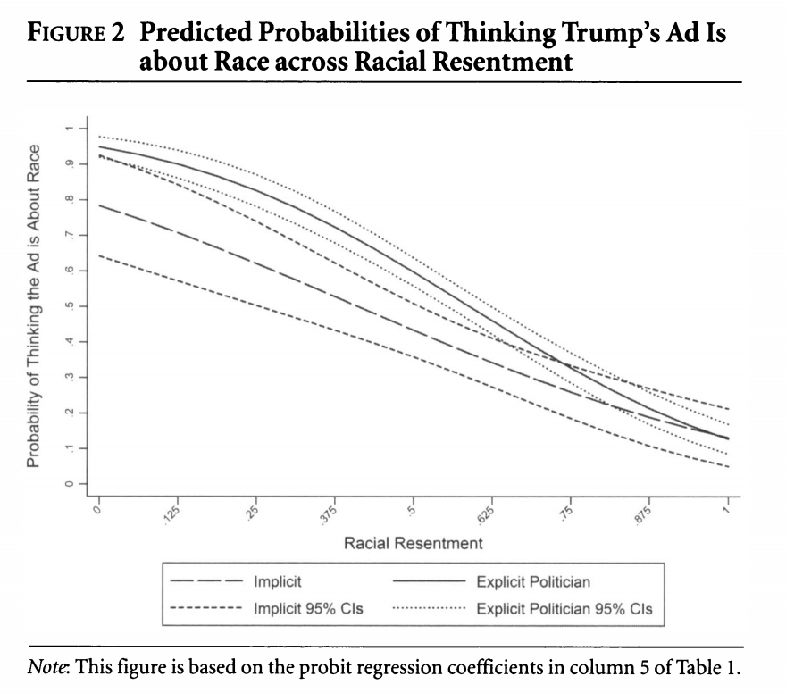
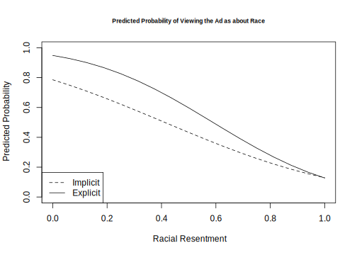

6.7 Week 3 Tutorial
This week’s example, we will replicate a portion of “The Effectiveness of a Racialized Counterstrategy” by Antoine Banks and Heather Hicks, published in the American Journal of Political Science in 2018. The replication data are here.
Abstract: Our article examines whether a politician charging a political candidate’s implicit racial campaign appeal as racist is an effective political strategy. According to the racial priming theory, this racialized counterstrategy should deactivate racism, thereby decreasing racially conservative whites’ support for the candidate engaged in race baiting. We propose an alternative theory in which racial liberals, and not racially conservative whites, are persuaded by this strategy. To test our theory, we focused on the 2016 presidential election. We ran an experiment varying the politician (by party and race) calling an implicit racial appeal by Donald Trump racist. We find that charging Trump’s campaign appeal as racist does not persuade racially conservative whites to decrease support for Trump. Rather, it causes racially liberal whites to evaluate Trump more unfavorably. Our results hold up when attentiveness, old-fashioned racism, and partisanship are taken into account. We also reproduce our findings in two replication studies.
We will replicate the analysis in Table 1 of the paper, based on an experiment the authors conducted through SSI. They exposed white survey respondents to either a news story about a Trump ad that includes an “implicit racial cue” or conditions that add to this with “explicitly racial” responses from different partisan actors calling out the ad as racist. Drawing on racial priming theory, racially prejudiced whites should be less supportive of Trump after the racial cues are made explicit. The authors test this hypothesis against their own hypothesis that this effect should be more pronounced among “racially liberal” whites.
We are going to focus on a secondary outcome related to whether respondents believed the ad to be about race: “We also suspect that whites should provide a justification for either maintaining or decreasing their support for the candidate alleged to be playing the race card. Our results support these expectations. For example, racial liberals who read about a politician calling Trump’s implicit ad racist are more likely than those in the implicit condition to believe Trump’s ad is about race. On the other hand, pointing out the racial nature of the ad does not cause resentful whites to be any more likely to believe the ad is about race. Racially resentful whites deny that Trump’s subtle racial appeal on crime is racially motivated, which provides them with the evidence they need to maintain their support for his presidency” (320).
6.7.1 Loading data and fitting glm
Let’s load the data.
library(rio)
study <- import("https://github.com/ktmccabe/teachingdata/blob/main/ssistudyrecode.dta?raw=true")The data include several key variables
abtrace1: 1= if the respondent thought the ad was about race. 0= otherwisecondition2: 1= respondent in the implicit condition. 2= respondent in one of four explicit racism conditions.racresent: a 0 to 1 numeric variable measuring racial resentmentoldfash: a 0 to 1 numeric variable measuring “old-fashioned racism”trumvote: 1= respondent has vote preference for Trump 0=otherwise

Let’s try to replicate column 5 in Table 1 using probit regression, as the authors do.
- Write down the equation for the regression.
- Use
glmto run the regression. - Compare the output to the table, column 5.
Try on your own, then expand for the solution.
We are fitting a probit regression.
## Column 5
fit.probit5 <- glm(abtrace1 ~ factor(condition2)*racresent + factor(condition2)*oldfash,
data=study, family=binomial(link = "probit"))
summary(fit.probit5)
Call:
glm(formula = abtrace1 ~ factor(condition2) * racresent + factor(condition2) *
oldfash, family = binomial(link = "probit"), data = study)
Deviance Residuals:
Min 1Q Median 3Q Max
-2.2659 -0.9371 -0.5194 1.0015 2.0563
Coefficients:
Estimate Std. Error z value Pr(>|z|)
(Intercept) 0.6320 0.2431 2.600 0.009323 **
factor(condition2)2 0.9685 0.2797 3.462 0.000535 ***
racresent -1.9206 0.4174 -4.601 4.2e-06 ***
oldfash 0.5265 0.3907 1.348 0.177772
factor(condition2)2:racresent -0.8513 0.4728 -1.801 0.071777 .
factor(condition2)2:oldfash -0.4197 0.4376 -0.959 0.337476
---
Signif. codes: 0 '***' 0.001 '**' 0.01 '*' 0.05 '.' 0.1 ' ' 1
(Dispersion parameter for binomial family taken to be 1)
Null deviance: 1376.9 on 994 degrees of freedom
Residual deviance: 1148.7 on 989 degrees of freedom
(25 observations deleted due to missingness)
AIC: 1160.7
Number of Fisher Scoring iterations: 4We can write the regression as: \[\begin{align*} Pr(Y_i = 1 | X) &= \\ \Phi(\alpha + \text{Explicit Politician Condition}_i*\beta_1 +\\ \text{Racial Resentment}_i *\beta_2 +\\ \text{Old Fashioned Racism}_i*\beta_3 +\\ \text{Explicit Politician Condition}_i*\text{Racial Resentment}_i*\beta_4 +\\ \text{Explicit Politician Condition}_i* \text{Old Fashioned Racism}_i*\beta_5) \end{align*}\]
library(equatiomatic)
extract_eq(fit.probit5, wrap = TRUE, terms_per_line = 3)\[ \begin{aligned} P( \operatorname{abtrace1} = \operatorname{1} ) &= \Phi[\alpha + \beta_{1}(\operatorname{factor(condition2)}_{\operatorname{2}}) + \beta_{2}(\operatorname{racresent})\ + \\ &\qquad\ \beta_{3}(\operatorname{oldfash}) + \beta_{4}(\operatorname{factor(condition2)}_{\operatorname{2}} \times \operatorname{racresent}) + \beta_{5}(\operatorname{factor(condition2)}_{\operatorname{2}} \times \operatorname{oldfash})] \end{aligned} \]
A few questions:
- How should we interpret the coefficients?
- How do the interactions affect this interpretation?
6.7.2 Numeric Optimization
Let’s repeat our replication of column 5, but this time, let’s use numeric optimization. We first need to make an X and Y matrix from our data. Because we have already run the models, let’s use a trick below:
X <- model.matrix(fit.probit5)
Y <- as.matrix(fit.probit5$y)The next thing we need to do is make a function for the log likelihood. Let’s recall the log likelihood for a Bernoulli random variable from a previous section:
\[\begin{align*} \mathcal L( \pi | Y_i) &= \underbrace{\pi^{y_i}(1 -\pi)^{(1-y_i)}}_\text{Likelihood for single observation}\\ \mathcal L( \pi | Y) &= \underbrace{\prod_{i=1}^n\pi^{y_i}(1 -\pi)^{(1-y_i)}}_\text{Likelihood for all observations}\\ \ell( \pi | Y) &= \underbrace{\sum_{i=1}^n\log \pi^{y_i}(1 -\pi)^{(1-y_i)}}_\text{Log likelihood} \end{align*}\]
Now we just change the definition of \(\pi\) to be the transformation for a probit, which is \(\Phi(X\beta)\). We code this up as a function below. Try to make the connection between the log likelihood equation above and the last line of the function. Note: in R, we can use pnorm() to express \(\Phi(X\beta)\), this is the CDF of the normal distribution.
llik.probit <- function(par, Y, X){
beta <- as.matrix(par)
link <- pnorm(X %*% beta)
like <- sum(Y*log(link) + (1 - Y)*log(1 - link))
return(like)
}Let’s generate some starting values for the optimization.
## Starting values
ls.lm <- lm(Y ~ X[, -1])
start.par <- ls.lm$coefFinally, let’s use optim to find our parameter estimates.
## optim()
out.opt <- optim(start.par, llik.probit, Y=Y,
X=X, control=list(fnscale=-1), method="BFGS",
hessian = TRUE)We can compare the estimates recovered from glm and optim.
## Log likelihood
logLik(fit.probit5)
out.opt$value'log Lik.' -574.3267 (df=6)
[1] -574.3267## Coefficients
cbind(round(coef(fit.probit5), digits=4),
round(out.opt$par, digits = 4)) [,1] [,2]
(Intercept) 0.6320 0.6321
factor(condition2)2 0.9685 0.9684
racresent -1.9206 -1.9207
oldfash 0.5265 0.5265
factor(condition2)2:racresent -0.8513 -0.8512
factor(condition2)2:oldfash -0.4197 -0.4196How could we get the standard errors?
6.7.3 Predicted Probabilities
One thing we could do for our interpretations is to push this further to generate “quantities of interest.”

We will do one example of this but will talk in more detail about this next week. Let’s generate predicted probabilities for thinking the ad is about race across levels of racial resentment in the sample, for people in the implicit and explicit conditions. For this example, we are going to hold “old-fashioned racism” at its mean value. This is slightly different from what the authors do but should generate similar results. The authors hold old-fashioned racism at its “observed values.”
We can rely on the predict function like we did with OLS, but here, we need to set type = response to put the results on the response scale instead of the scale of the linear predictor. What this does is apply our function \(\Phi(\mathbf{x_i}' \hat \beta)\) for our designated values of \(X\) and estimates for \(\hat \beta\).
predvals.imp <- predict(fit.probit5, newdata = data.frame(condition2=1,
racresent = seq(0, 1, .0625),
oldfash = mean(study$oldfash, na.rm=T)),
type="response")
predvals.exp <- predict(fit.probit5, newdata = data.frame(condition2=2,
racresent = seq(0, 1,.0625),
oldfash = mean(study$oldfash, na.rm=T)),
type="response")
## Plot results
plot(x=seq(0, 1, .0625), y=predvals.imp, type="l",
ylim = c(0, 1), lty=2,
ylab = "Predicted Probability",
xlab = "Racial Resentment",
main = "Predicted Probability of Viewing the Ad as about Race",
cex.main = .7)
legend("bottomleft", lty= c(2,1), c("Implicit", "Explicit"))
points(x=seq(0, 1, .0625), y=predvals.exp, type="l")
Additional Questions
- For extra practice, you can try replicating column 4 in the model.
- You can also try replicating the results in the figure with a logit model. Are the predicted probabilities similar?